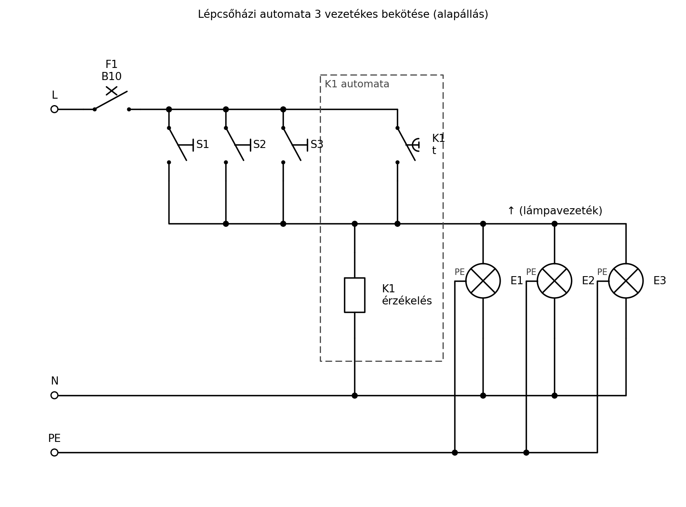
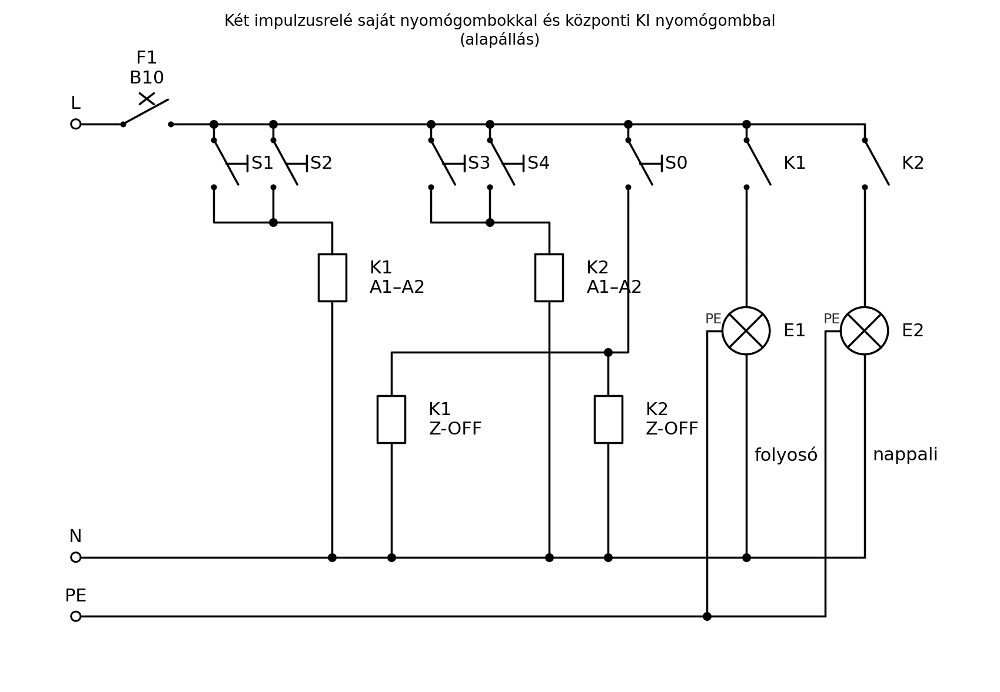
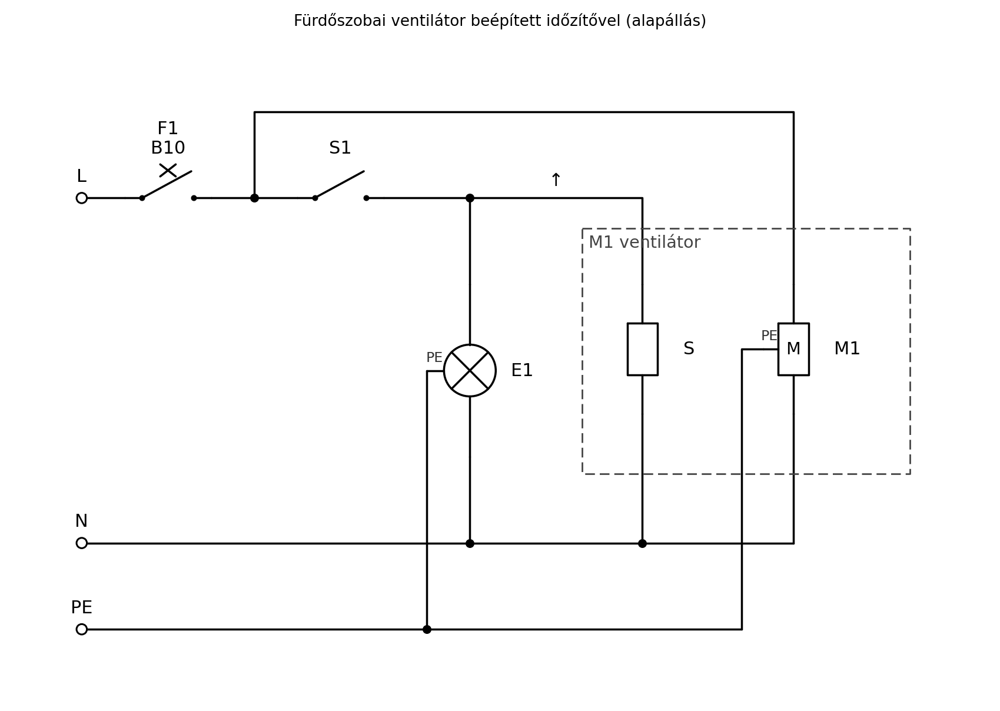
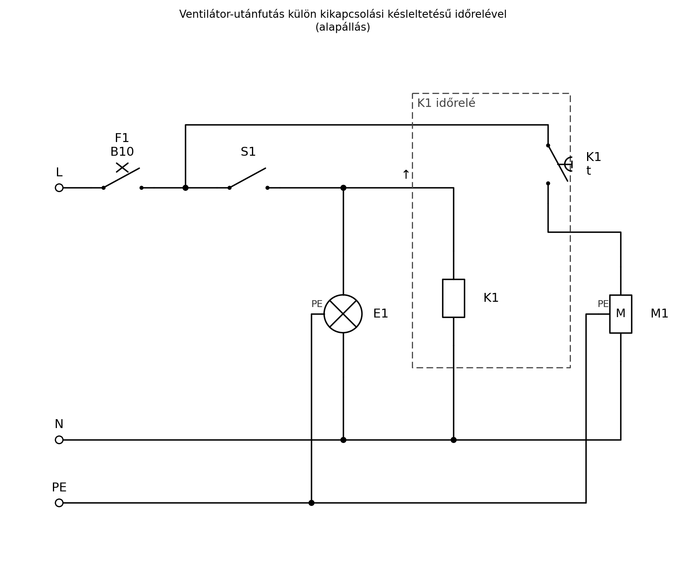
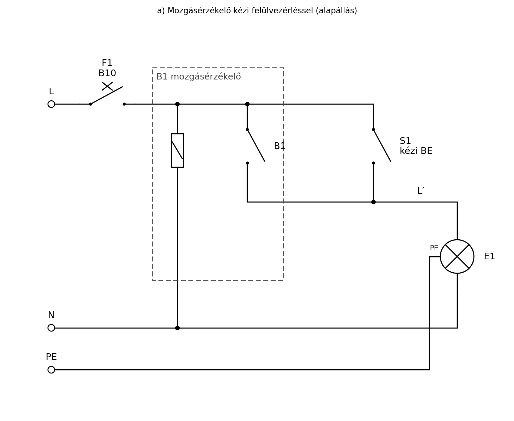
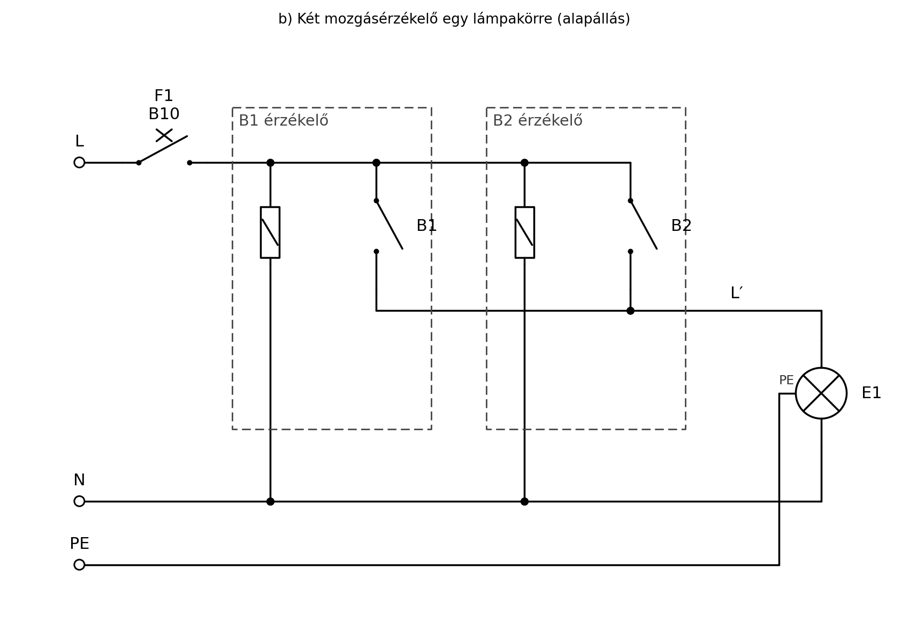
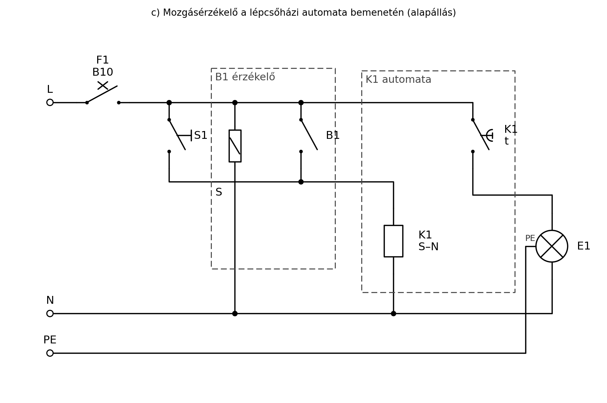
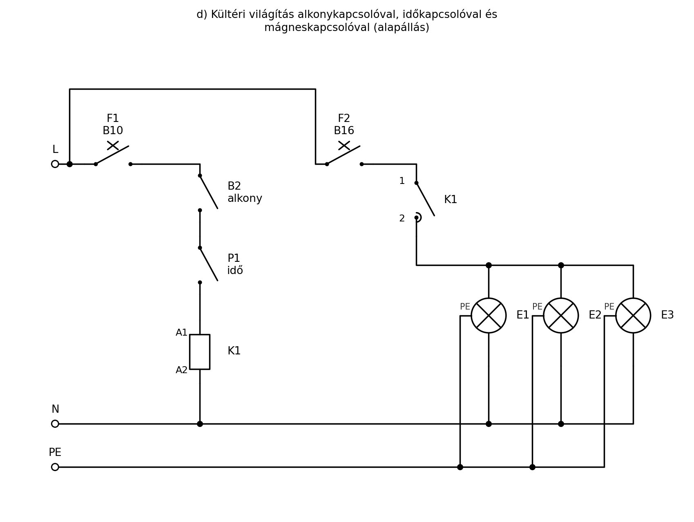
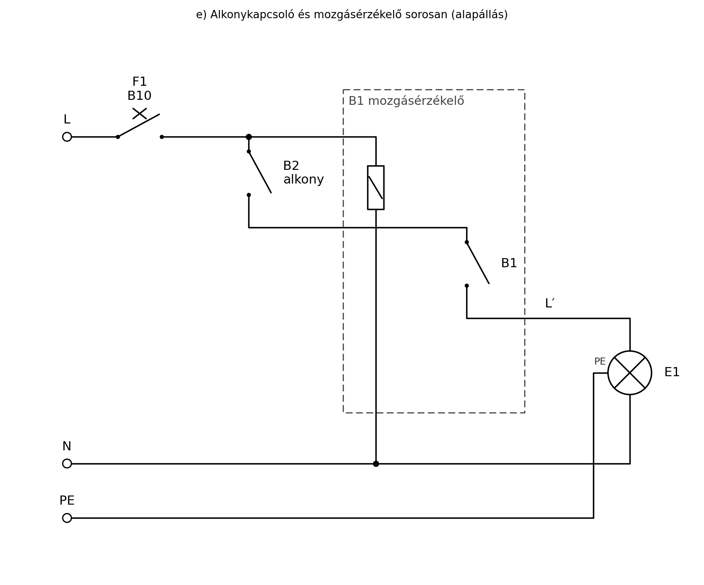

Egy lépcsőházban a világítást a lakó az egyik szinten bekapcsolja, felmegy a lakásához, majd a világításnak magától el kell aludnia. Ha ezt nem automatizáljuk, valaki vagy égve hagyja a lámpákat, vagy minden szinten bonyolult váltó- és keresztkapcsolást kell építeni, mint amilyet a Világítási áramkörök: egypólusú, soros, váltó és kereszt alfejezetben tanultál. A lépcsőházi automata, az impulzusrelé és az időrelé ugyanazt a gondolatot viszi tovább: több nyomógomb egyetlen világítást vezérel, de a kapcsolási logika időt is ad hozzá, vagy a nyomógombok működését teszi egyszerűbbé és üzembiztosabbá.
Képzeld el a lépcsőházat úgy, hogy a földszinten, az emeleteken és a kijáratnál egy-egy nyomógomb van, a mennyezeten pedig párhuzamosan kötött lámpák. Ha bármelyik gombot megnyomod, a világítás bekapcsol, majd a beállított idő után lekapcsol. A szerelő dolga, hogy ezt a funkciót a megfelelő készülékkel, a készülék terhelhetőségét és a mai LED-lámpák sajátosságait is figyelembe véve, üzembiztosan bekösse.
Továbbvitt eredmény. A relés kapcsolási logikát és az időzítés fogalmát később az Intelligens épület: tervezés, üzembe helyezés, energiahatékonyság alfejezetben az épületautomatikai kapcsolásokban, valamint a Világítási áramkörök építése: egypólusú, váltó, kereszt gyakorlati útmutatóban is használjuk.
Definíció. A lépcsőházi automata olyan időzített kapcsolókészülék, amely a nyomógomb impulzusára bekapcsolja a világítást, és a beállított idő letelte után a világítás áramkörét magától megszakítja. A mai lépcsőházi automaták általában elektronikus készülékek, korábban elektromechanikus, óraműves vagy hőkioldós megoldások is léteztek.
A kapcsolás két, egymástól jól elkülöníthető részből áll:
A nyomógombokat párhuzamosan kell kötni. Ha sorba kötnéd őket, akkor csak akkor lenne vezérlés, ha az összes gombot egyszerre nyomnád meg.
A lépcsőházban ez a gyakorlatban úgy néz ki, hogy a lépcsőházi automatától két ér indul felfelé: a fázis (barna) és a vezérlő visszatérő ér (például szürke), és mindkettő végighurkolódik az összes nyomógombdobozon. Minden nyomógomb ennek a két érnek a végpontjai közé kapcsol, ezért bármelyik egymagában zárja a vezérlőkört. Az alábbi ábra bal oldala ezt a helyes, párhuzamos bekötést, a jobb oldala a hibás láncolást mutatja, amikor a gombok egymás után, sorba kerülnek.
A párhuzamos bekötés ellenőrzése egyszerű: feszültségmentes állapotban az automata L és S kapcsa között bármelyik gomb megnyomására kis ellenállást kell mérni. Ha csak az összes gomb együttes nyomására van folytonosság, a gombok sorba kerültek. A HTML-kiadásban a helyes és a hibás változat külön is megnézhető.
A rajzon a felső vízszintes vezeték az F1 kismegszakító utáni L fázis, alatta az N nulla, legalul a PE védővezető, amelyre a lámpatestek csatlakoznak. Az S1, S2, S3 nyomógombok párhuzamosan kapcsolódnak a K1 lépcsőházi automata vezérlő áramkörére. Ha bármelyik nyomógombot megnyomod, a vezérlő áramkör bezárul. A K1 készülék ekkor behúzza a K1 érintkezőjét, és az E1–E3 lámpák fázisellátása megvalósul. A beállított idő lejárta után az érintkező kinyit, a lámpák elalszanak.
Figyelem. A gombok áramköre csak vezérlő áramot visz, ezért vékonyabb vezetékkel is szerelhető, de a lámpa- és gombáramköröket ne keverd össze. A lámpaáramot a K1 érintkezője kapcsolja, tehát annak terhelhetősége a mértékadó.
A hazai gyakorlatban a lépcsőházi automatát kétféleképpen kötik be, és felújításnál mindkettővel találkozol. A különbség abban van, hogy a nyomógombok külön vezérlőérre (4 vezetékes) vagy közvetlenül a lámpavezetékre (3 vezetékes) adják a fázist. A felső rajz a 4 vezetékes bekötés: a gombok az L és a külön S vezérlőér között vannak, a K1 a kimenetével (↑) kapcsolja a lámpákat.

A 3 vezetékes bekötésben nincs külön vezérlőér: a gombok az L és a ↑ lámpavezeték közé kapcsolnak, vagyis párhuzamosan a K1 kimeneti érintkezőjével. Gombnyomáskor a lámpák a gombon át azonnal feszültséget kapnak; a K1 ezt a ↑-en megjelenő feszültséget érzékeli, és a saját érintkezőjével a beállított t ideig bekapcsolva tartja a kört (önfenntartás).

Hasonlítsd össze a két rajzot: a 4 vezetékesen a gombok csak a K1 vezérlőbemenetét táplálják, a 3 vezetékesen a gombok és a K1 érintkezője ugyanarra a ↑ vezetékre dolgozik.
| Szempont | 3 vezetékes | 4 vezetékes |
|---|---|---|
| érszám a lépcsőházban | 3 + PE (L, ↑, N, PE) | 4 + PE (L, S, ↑, N, PE) |
| gombnyomáskor a lámpák árama | a bekapcsolás pillanatában a gombon át folyik | a gombon csak a vezérlőáram folyik |
| megvilágított (glimmes, LED-es) gomb | nem, vagy csak N-kapcsos gombbal: a jelzőfény árama a lámpákon át folyna – LED-lámpánál derengést okoz, és az automata a ↑-en feszültséget érzékelve nem kapcsol ki | igen, a megengedett összes jelzőfényáramig |
| a gomb terhelése | a lámpák bekapcsolási árama | csak vezérlőáram |
| tipikus előfordulás | régi lépcsőházak | új szerelés |
| a készülék | sok automata üzemmódkapcsolóval mindkettőre alkalmas (ellenőrizendő: adatlap) |
Szabály. A 4 vezetékes bekötésnél a megvilágított gombok jelzőfényeinek összes árama nem lépheti túl az automata adatlapján megadott értéket, különben a jelzőfények árama a bemeneten „folyamatos gombnyomásnak” látszik, és az automata nem kapcsol ki (ellenőrizendő: a megengedett jelzőfényáram a gyártói adatlap szerint).
Olvasd le: 4 vezetékes bekötésnél a felszállóban 5 ér fut (L, S, ↑, N, PE), a gombhoz 2 ér (L, S; megvilágított gombnál +N, azaz 3), a lámpához 3 (↑, N, PE), és kötődobozonként 5 összekötő kell. 3 vezetékes bekötésnél a felszálló 4 eres (L, ↑, N, PE), a gombhoz 2 ér (L, ↑), a lámpához 3. A HTML-kiadásban külön kiemelheted a gombnyomás vezérlőútját és a lámpaáram útját.
A „Hibamód” listában négy hiba kapcsolható be; előbb tippelned kell, mit tapasztal majd a lakó, utána próbálhatod ki és olvashatod el a magyarázatot. A hibák tünete és oka:
| Hibamód | Tünet | Ok |
|---|---|---|
| a gombok sorosan kötve | egyik gombbal sem kapcsol be (csak ha mindet egyszerre nyomják) | a gomboknak párhuzamosan kell lenniük (VAGY-kapcsolat) |
| egy gomb beragadt | bekapcsol, de nem kapcsol ki | a folyamatos vezérlőjel újra és újra indítja az időt |
| 3 vezetékes bekötés megvilágított gombokkal | kikapcsolva a lámpák derengenek, az automata nem old | a jelzőfény árama a ↑ vezetéken és a lámpákon át folyik, az automata ezt bekapcsolásnak érzékeli |
| 4 vezetékes, túl sok megvilágított gomb | bekapcsol, de nem kapcsol ki | a jelzőfények összárama nagyobb az adatlapon megengedettnél (lásd a 22,5 mA / 54 mA-es példát) |
A lépcsőházi automata terhelhetőségénél nemcsak az üzemi áramot kell nézni, hanem a lámpatípust is. Az izzólámpa hideg izzószálának ellenállása kicsi, ezért a bekapcsolás pillanatában a névleges áram többszöröse folyik.
Számítás. Adott: 8 db, egyenként 60 W-os izzólámpa,
.
Keresett: az üzemi áram, és a bekapcsolási áram becslése.
A teljesítmény:
Az üzemi áram:
Az izzólámpák hidegindítási árama a gyakorlati becslés szerint a névleges áram körülbelül 8–15-szöröse lehet. Ha a közbülső 10-szeres értéket vesszük:
Ezért egy 10 A névleges áramú érintkező sem feltétlenül alkalmas 2,09 A üzemi áramú izzóterhelés kapcsolására. A készülék gyártója izzóterhelésre általában csökkentett teljesítményt vagy maximális darabszámot ad meg. (ellenőrizendő: a kiválasztott készülék gyártói adatlapja)
Szabály. A készülék érintkezőjét mindig a tényleges lámpatípusra, a gyártó adatlapján megadott maximális terhelés szerint válaszd ki. LED-lámpáknál az üzemi áram kicsi, de a meghajtó elektronika bekapcsolási árama rövid időre szintén nagy lehet, ezért a LED-ek maximális darabszámát is ellenőrizni kell.
Definíció. Az impulzusrelé olyan bistabil kapcsolókészülék, amely minden nyomógomb-impulzus hatására ellenkező állapotba vált: ha az érintkezője nyitott volt, behúz, ha behúzott, kinyit. A köznyelvben léptetőrelének is nevezik; nem tévesztendő össze a lépcsőházi automatával, amely időzített lekapcsolást végez.
Az impulzusrelé előnye, hogy egyetlen központi készülékkel sok nyomógombot lehet párhuzamosan kötni. A nyomógombok nem a főáramkört szakítják meg, hanem a készülék tekercsét gerjesztik. Minden gombnyomás egy rövid, megszakított áramkört hoz létre, ezért az „impulzus” elnevezés.
A bekötés nagyon hasonlít a lépcsőházi automata bekötéséhez, de a készülék viselkedése más. A nyomógombok párhuzamosan csatlakoznak a tekercsre, a lámpák pedig a K1 érintkezőn keresztül kapnak feszültséget. Ha még egyszer megnyomsz egy gombot, a készülék lekapcsolja a lámpákat. Logikai olvasatban (E = a gombnyomás felfutó éle); ezt a feladatot a Logikai kapuk, számrendszerek és a relé helyett logika alfejezet feladatbankja dolgozza fel.
Megjegyzés. A készülék kapocsjelölése a gyártó típusától függ. A vezérlőtekercs általában A1 és A2 jelű, a váltóérintkező pedig gyakran 11-12-14 jelű, ahol a 11 a közös, a 12 a bontó, a 14 a záró érintkező. Régi készülékeken előfordulhat 1-2-4 jelölés is. A bekötés előtt mindig ellenőrizd a készülék oldalán lévő kapcsolási rajzot és a gyártói adatlapot. (ellenőrizendő: a készülék kapocsjelölése)
Mindkét készülék moduláris, tehát az elosztóban a 35 mm-es DIN-sínre pattintható, ugyanúgy, mint a kismegszakító. Az alábbi ábrán a lépcsőházi automatán a tápkapcsok (1), az időállító (2), az üzemmódkapcsoló (3) és a nyomógomb-bemenet, illetve a lámpakimenet kapcsai (4) láthatók; az impulzusrelén a tekercs és az érintkező kapcsai (5), a kézi kar (6) és az állásjelző ablak (7). Az oldalnézet azt mutatja, hogyan akad a készülék a sín (8) felső peremére, és hogyan rögzíti alul a rugós retesz (9).
A kezelőelemek és a kapcsok elrendezése típusonként eltér, ezért a rajz csak a jellemző részeket mutatja; a készülék oldalán lévő kapcsolási rajz a mérvadó. Az impulzusrelé kézi karja hibakereséskor hasznos: feszültségmentes állapotban kézzel átváltva folytonosságméréssel ellenőrizhető az érintkező. A HTML-kiadásban az egyes részekre mutatva olvasható a rövid leírásuk.
Hová kerül és hány ér kell? A lakásban az impulzusrelé (K1) a lakáselosztóba kerül, az F1 világítási kismegszakító után. A nyomógombokhoz mindössze 2 ér fut, gombról gombra hurkolva (L és a vezérlőér; megvilágított gombnál +N, azaz 3 ér), a lámpákhoz 3 ér (↑, N, PE). Ezzel szemben a négy helyről működtetett keresztkapcsoláshoz a kapcsolókhoz 3 + 4 + 4 + 3 ér kell, és a kötődobozban 20 érvég, 10 összekötő. Az alábbi installációs vázlat ugyanazt a hosszú közlekedőt mutatja a két megoldással.
Döntési szabály. Két-három kapcsolási helyig a váltó-, illetve keresztkapcsolás az egyszerűbb. Négy vagy több helytől az impulzusrelé kevesebb eret és kötést igényel (a gombokhoz mindig 2 ér), cserébe elosztóhelyet és egy állandóan táplált készüléket kell beépíteni, és a gombok vezérlőköre is a rajzon/dokumentációban rögzítendő.
Több csoport és központi KI. Ha a lakásban több impulzusrelés kör van (pl. K1 folyosó, K2 nappali), a kijáratnál egy „mindent KI” nyomógomb (S0) kényelmes. Ehhez olyan relé kell, amelynek van központi KI bemenete (a rajzon Z-OFF – a jelölés gyártófüggő); az S0 mindegyik relé központi bemenetére megy:

A K1 csak az S1–S2, a K2 csak az S3–S4 impulzusára vált; az S0 a két relét – a pillanatnyi állapotuktól függetlenül – kikapcsolja. Ha a relének nincs központi bemenete, egy egyszerű párhuzamos gomb nem jó megoldás (az impulzus a bekapcsolt relét kikapcsolná, a kikapcsoltat viszont be!); ilyenkor központi vezérlőrelé vagy épületautomatikai busz kell – ezt a KNX, DALI és más épületautomatikai rendszerek alfejezet tárgyalja.
Időkorlátos impulzusrelé. Az elfelejtett világítás ellen olyan multifunkciós időrelé is választható, amelynek „impulzusrelé időkorláttal” funkciója van: a gombnyomásra be- és kikapcsol, de ha bekapcsolva felejtik, a beállított idő után magától kikapcsol (a fenti idődiagram „impulzusrelé” és „lépcsőházi funkció” sávjának kombinációja). A funkció neve és működése gyártófüggő (ellenőrizendő: a készülék működési leírása).
Ellenőrzés (feszültségmentes állapotban). A tekercs (A1–A2) ellenállása az adatlap szerinti nagyságrendű; a kézi karral átváltva a kimeneti érintkező folytonossága váltakozik; a vezérlőér és az L között bármelyik gomb megnyomására kis ellenállás mérhető (párhuzamos gombok), egyik gomb sem nyomva szakadás.
Szabály. A nyomógombokat mindig párhuzamosan kösd, függetlenül attól, hogy lépcsőházi automatát, impulzusrelét vagy időrelét használsz. A párhuzamos kapcsolás logikai VAGY-kapcsolatot jelent: elég, ha legalább egy gomb zár.
Definíció. Az időrelé olyan vezérlőkészülék, amely a bemenetére adott vezérlőjel hatására az érintkezőit nem azonnal, hanem beállított idő után, illetve meghatározott időbeli sorrend szerint kapcsolja.
A gyakorlatban leggyakrabban az alábbi késleltetési típusokkal találkozol:
Az alábbi idődiagram sávonként a vezérlőjelet (vékony vonal) és a kimeneti 11–14 érintkező állapotát (vastag vonal) mutatja. Bekapcsolási késleltetésnél (t = 5 s) a 2 s-kor megjelenő vezérlőjelre a kimenet 7 s-kor húz be, a t-nél rövidebb jelre egyáltalán nem; kikapcsolási késleltetésnél a kimenet a vezérlőjellel együtt húz be, és annak megszűnése után még t ideig zárva marad. A lépcsőházi funkció (t = 10 s) impulzusra azonnal bekapcsol; a futó idő alatti újranyomás sok készüléken újraindítja az időt (itt 4 + 10 = 14 s-kor kapcsol ki). Összehasonlításként az impulzusrelé minden impulzusra vált, idő nélkül, a villogó pedig a vezérlőjel fennállása alatt 1 s be / 1 s ki ütemben kapcsol.
Az interaktív változatban funkciót választhatsz, állíthatod a t időt (1–30 s), és a „Nyomógomb” gombbal valós időben rajzoltathatod a vezérlőjelet és a kimenetet; a lámpa jelzi, hogy a kimenet zárt-e. A valódi készülékek viselkedése (például az újraindítás) gyártófüggő (ellenőrizendő: a készülék működési leírása).
A lépcsőházi világításhoz tehát a lépcsőházi funkciójú időrelé vagy az időzített lekapcsolású készülék illik. A kikapcsolási késleltetést gyakran használják például szellőzőventilátorok utánfutási idejére: a ventilátor a kapcsoló kikapcsolása után még a beállított ideig tovább jár.
A lakásfelújítás egyik leggyakoribb kapcsolása: a fürdő vagy a WC ventilátora a lámpával együtt indul, és a lámpa lekapcsolása után még néhány percig jár, hogy kiszellőztessen. Két megoldás terjedt el. Az első a beépített időzítős ventilátor: a ventilátor állandó fázist (L), nullát (N) és a lámpa kapcsolt fázisáról egy vezérlőjelet (S) kap, az utánfutást a saját elektronikája végzi.

A rajzon látszik, miért kell a ventilátorhoz 4 ér (L, ↑, N, PE): az állandó fázis nélkül a ventilátor a lámpa lekapcsolásakor azonnal megállna. II. érintésvédelmi osztályú (kettős szigetelésű) ventilátornál a PE-t nem kell bekötni, de a dobozban a többi szerelvény felé továbbvezetjük. A második megoldás egy külön kikapcsolási késleltetésű időrelé (DIN-sínes vagy kötődobozba szerelhető modul), amely egyszerű, időzítő nélküli ventilátort kapcsol:

A K1 működése a fenti idődiagram „kikapcsolási késleltetés” sávja: amíg az S1 be van kapcsolva, a kimenet zárt; az S1 kikapcsolása után még t ideig zárva marad. Az utánfutási idő tipikus beállítása 2–15 perc (tájékoztató érték). A ventilátorra – mint minden fürdőszobai szerelvényre – a nedves helyiségek zóna- és IP-követelményei vonatkoznak, és a kör 30 mA-es áram-védőkapcsoló mögött van; ezeket a Aljzatkörök és fogyasztói csatlakozások, nedves helyiségek alfejezet tárgyalja (ellenőrizendő: MSZ HD 60364-7-701).
Szabály. Mindig nézd meg, hogy az időrelé bemenete külön vezérlőbemenettel rendelkezik-e, vagy a tápfeszültség megjelenése maga a vezérlés. Egyes készülékeknél a tápfeszültség ráadása indítja az időzítést, másoknál külön nyomógombos vezérlőbemenet van. A bekötés előtt ezért a gyártói kapcsolási rajz az elsődleges. (ellenőrizendő: a készülék működési leírása)
A mozgásérzékelő és az alkonykapcsoló (szürkületkapcsoló) alapbekötését és belső működését az Érzékelők: fény, mozgás, jelenlét, hőmérséklet alfejezet mutatja. A szerelői gyakorlatban azonban ritkán kötik be őket egyedül: kézi felülvezérlés, több érzékelő, időzítő vagy mágneskapcsoló társul hozzájuk. Az alábbi rajzokon az érzékelőt keret jelöli: benne a készülék elektronikájának L–N táplálása (téglalap) és a kimeneti érintkezője, amely az L-ről a kapcsolt L′-re kapcsol. A betűjelek a könyv konvenciója szerint: B1, B2 érzékelők, S1 kézi kapcsoló, K1 automata vagy mágneskapcsoló, E1… lámpák.
a) Mozgásérzékelő kézi „állandó BE” kapcsolóval. Az S1 egypólusú kapcsoló a B1 kimenetével párhuzamosan, az L és az L′ közé kerül: BE állásban a lámpa az érzékelőtől függetlenül ég (pl. kerti munkához).

Buktató: S1 BE állásában a B1 kimenetére „visszafelé” feszültség jut. Relés kimenetű érzékelőnél ez megengedett, elektronikus (triakos) kimenetnél csak akkor, ha a gyártó kifejezetten engedi (ellenőrizendő: az érzékelő adatlapja).
b) Két érzékelő egy lámpakörre. Hosszú folyosón vagy kertben egy érzékelő nem lát be mindent; a két érzékelő kimenete (L′) összeköthető, így bármelyik érzékel, a lámpa ég.

Buktató: csak azonos fázisról és csak akkor, ha a gyártó megengedi a kimenetek párhuzamos kötését (ellenőrizendő: adatlap); egyébként az egyik érzékelő „mester”, a másik „mellék” (master–slave) kivitelű legyen, és a mellék csak jelet ad a mesternek.
c) Mozgásérzékelő a lépcsőházi automata bemenetén. A 4 vezetékes lépcsőházi bekötésben (lásd a „Három- és négyvezetékes bekötés” pontot) a B1 kimenete a nyomógombokkal párhuzamosan a K1 S vezérlőbemenetére kerül: a B1 csak „gombot nyom”, az időzítést a K1 végzi.

Buktató: a B1 saját utánfutási idejét a legrövidebbre állítsd, különben a két időzítés összeadódik; 3 vezetékes bekötésnél ez a megoldás csak a gyártó engedélyével működik (ellenőrizendő: adatlap).
d) Kültéri díszvilágítás alkonykapcsolóval, időkapcsolóval és mágneskapcsolóval. A B2 DIN-sínes alkonykapcsoló (külső fényérzékelővel) sötétben zár, a P1 időkapcsoló pl. 23:00-kor bont; a kettő sorosan a K1 mágneskapcsoló A1–A2 tekercsét kapcsolja, és a lámpacsoportot a K1 főérintkezője kapcsolja az F2 kismegszakító után.

Indok: az alkonykapcsoló érintkezője nem bírja a LED-meghajtók bekapcsolási áramát és az összterhelést, ezért mágneskapcsoló közbeiktatása kell. Példa (feltételezett adatokkal). 12 db 8 W-os LED-lámpatest: , . Az üzemi áram kicsi, a döntő mégis a bekapcsolási áramcsúcs: a gyártó a kapcsolókészülékre „legfeljebb N db LED-meghajtó” adatot ad meg, ezt kell összevetni a lámpák számával (ellenőrizendő: a készülék adatlapja). A nagy terhelés és az épületautomatikai változatok az Intelligens épület: tervezés, üzembe helyezés, energiahatékonyság alfejezetben folytatódnak.
e) Alkonykapcsoló és mozgásérzékelő külön készülékkel, sorosan. Ha a lámpának csak sötétben ÉS mozgásra kell égnie, és nincs kombinált (fény- és mozgásérzékelős) készülék, a B2 alkonykapcsoló érintkezője után kapja a B1 kimenete a kapcsolandó fázist.

Buktató: a B1 elektronikáját a B2 előtt, állandó L–N-ről tápláld; ha a B2 után kapná a tápot, minden alkonyatkor újraindulna (bemelegedési idő, téves kapcsolások).
Döntési táblázat.
| Igény | Megoldás |
|---|---|
| mozgásra kapcsoló bejárati/kerti lámpa | mozgásérzékelő (B1) |
| ugyanez, de néha tartósan égjen | mozgásérzékelő + párhuzamos kézi kapcsoló (a) |
| nagy terület, egy érzékelő nem lát be mindent | két érzékelő, vagy mester–mellék pár (b) |
| sötétedéstől hajnalig égő díszvilágítás | alkonykapcsoló (+ mágneskapcsoló nagy terhelésnél) |
| sötétedéstől éjfélig, utána sötét | alkonykapcsoló + időkapcsoló + mágneskapcsoló (d) |
| csak sötétben és mozgásra | kombinált alkony- és mozgásérzékelő (Érzékelők: fény, mozgás, jelenlét, hőmérséklet), vagy alkonykapcsoló + mozgásérzékelő sorosan (e) |
| lépcsőház gombbal és mozgásra is | lépcsőházi automata + érzékelő a bemeneten (c) |
Egy társasház lépcsőházában a régi izzólámpás lépcsőházi automatát LED-lámpákra cserélték, de a szerelő a régi automatát megtartotta. A lakók azt tapasztalták, hogy kikapcsolt állapotban a LED-lámpák halványan világítottak, néha villogtak.
Tünet. Az automatának le kellene kapcsolnia, a lámpák mégsem teljesen sötétek.
Hipotézis. Az elektronikus lépcsőházi automata belső áramköre kikapcsolt érintkező állapotban is nagyon kis áramot enged át, vagy a kapcsain marad kisfeszültség. A régi izzólámpa ezt az áramot nem tudta meggyújtani, a LED-lámpa viszont igen érzékeny, ezért halványan világít.
Mérés. A szerelő a kikapcsolt állapotban megmérte a lámpa kapcsain a feszültséget. A műszer nem nullát, hanem több tíz volt nagyságrendű maradékfeszültséget mutatott. Ez a mérés nem pontos terhelési adat, de jól jelzi, hogy nem teljes a leválasztás. (ellenőrizendő: a készülék szivárgó áramára vonatkozó gyártói adat)
Ok. A régi automata nem volt LED-kompatibilis, és a minimális terhelési feltétele sem teljesült. A LED-ek üzemi árama túl kicsi volt ahhoz, hogy a készülék stabilan kapcsoljon, illetve a maradékáram elegendő volt a LED meghajtók zavaró működéséhez.
Javítás. A szerelő LED-kompatibilis lépcsőházi automatát épített be, és ellenőrizte, hogy a lámpák összteljesítménye a készülék minimális és maximális terhelési tartományán belül van. Szükség esetén a gyártó által javasolt terhelőelem is alkalmazható.
Megelőzés. A lámpacsere előtt ellenőrizd a kapcsoló- és időzítő készülék LED-kompatibilitását, a minimális terhelésre vonatkozó adatot, és a maximális számú LED-lámpa értéket. (ellenőrizendő: gyártói katalógusadatok)
Hiba 1: A nyomógombokat sorba kötik.
Ha a gombok sorba vannak kötve, csak akkor működik a vezérlés, ha
mindegyiket egyszerre nyomják. A helyes kapcsolás párhuzamos, mert így
bármelyik gomb önállóan be tudja kapcsolni a készüléket.
Hiba 2: A tekercs- és a lámpaáramkört
összekeverik.
A vezérlő áramkör kis áramú, a lámpaáramkör a tényleges terhelést viszi.
Ha a vastag lámpavezetéket a nyomógombra kötik, vagy a vezérlő fáziságat
a lámpa után veszik le, akkor a kapcsolás hibásan vagy életveszélyesen
működhet. A rajz szerint kell elkülöníteni a két áramkört.
Hiba 3: Az izzóterhelést a névleges érintkezőárammal
egyenértékűnek tekintik.
Az izzólámpa bekapcsolási árama többszöröse az üzemi áramnak, ezért az
érintkezők összehegedhetnek, vagy a készülék idő előtt tönkremegy. Az
izzóterhelésre mindig a gyártó által megadott csökkentett érték a
mérvadó. (ellenőrizendő: a készülék izzóterhelhetőségi
adata)
Hiba 4: A LED-lámpák minimális terhelését figyelmen kívül
hagyják.
A túl kevés LED-del terhelt kapcsolókészülék halványan világító vagy
villogó lámpát okozhat. A LED-kompatibilis készülék kiválasztása és a
gyártó által előírt minimális terhelés ellenőrzése kötelező.
(ellenőrizendő: LED-kompatibilitási adat)
Hibakeresés a tünetből. A lépcsőházi világítás hibabejelentéseinél a tünetből indulj. A bontást és a folytonosságmérést feszültségmentesen, az öt biztonsági lépés után végezd; a feszültség alatti mérés csak jogosult személy feladata.
| Tünet | Lehetséges ok | Ellenőrzés | Javítás |
|---|---|---|---|
| A világítás folyamatosan ég | beragadt gomb; „állandó BE” állás; 3 vezetékesnél megvilágított gombok | üzemmódkapcsoló; gombok egyenkénti bontása | gombcsere, helyes állás, megfelelő gombok |
| Egy szinten nem kapcsol a gomb | szakadt S (vagy L) ér a kötődobozban; hibás gomb | folytonosság a gomb nyomásakor | kötés javítása, gombcsere |
| Egy gomb sem működik, kézi állásban ég | vezérlőbemenet vagy tekercs hibás; N hiányzik a K1-en | vezérlőáramkör, N kapocs, tekercs-ellenállás | N bekötése, készülékcsere |
| Az impulzusrelé zúg vagy melegszik | beragadt gomb, tartós tekercsáram | gombok bontása, tekercsáram | gombcsere; sérült tekercsnél relécsere |
| Idő előtt kialszik | rövid időbeállítás; az újranyomás nem indítja újra az időt | beállítás, adatlap | idő növelése, megfelelő funkció |
| Kikapcsolva dereng | jelzőfény-áram, maradékáram, nem LED-kompatibilis készülék | gombtípus, készülékadat | N-kapcsos gomb, LED-es automata (16.1) |
| Gombnyomásra old a FI | nedves kültéri gombdoboz, sérült szigetelés | szigetelési ellenállás mérése szakaszonként | szárítás, IP-s doboz, kábelcsere |
A LED-derengés elektronikai hátterét és a dimmertípusokat az Erősáramú félvezetők: tirisztor, triac, IGBT, MOSFET alfejezet, a glimmlámpás kapcsolónál és hosszú vezetéknél jelentkező változat hibakeresését a Világítási áramkörök építése: egypólusú, váltó, kereszt alfejezet tárgyalja.
Felezéses keresés. Ha sok gomb vagy doboz közül kell egy hibásat megtalálni, ne egyenként haladj. Feszültségmentesen bontsd meg a vonalat a közepén, mérd meg mindkét felét, és a hibás félben ismételd, amíg egy gomb vagy szakasz marad. Nyolc gombnál ez három bontás.
Gyakorlás: ennek az alfejezetnek a kidolgozott példái, gyakorlatai és megoldással ellátott feladatai az Összefoglaló feladatgyűjtemény villanyszerelő tanulóknak című kötet 16.3 szakaszában találhatók.
A lépcsőházi automata a nyomógomb impulzusra bekapcsolja a világítást, és beállított idő után lekapcsolja. A nyomógombokat párhuzamosan kötik, hogy bármelyik gomb önállóan vezérelhessen. Az impulzusrelé ezzel szemben időzítés nélkül, minden nyomógomb-impulzusra vált, ezért többpontos központi világításhoz alkalmas. Az időrelé ennél általánosabb készülék: bekapcsolási, kikapcsolási, lépcsőházi vagy villogó funkcióval késlelteti az érintkezők kapcsolását. A szerelőnek mindig el kell különítenie a kis áramú vezérlő áramkört a lámpákat tápláló főáramkörtől. A készülék kiválasztásakor figyelembe kell venni az izzólámpák bekapcsolási áramcsúcsát, a LED-ek minimális terhelési követelményét és a LED-kompatibilitást. Hálózati feszültségen csak jogosult személy dolgozhat, a gyakorlati bekötést feszültségmentes állapotban, az öt biztonsági szabály szerint kell elvégezni. A relé- és időzítési logikát továbbvisszük az Intelligens épület: tervezés, üzembe helyezés, energiahatékonyság és a Világítási áramkörök építése: egypólusú, váltó, kereszt alfejezetekbe.